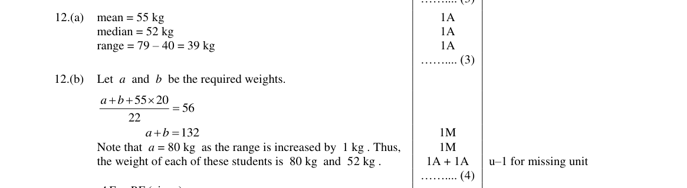

2015 DSE 數學 P1 Q12 答案＋詳解
題目（中文卷）
下面的幹葉圖顯示足球學會的學生的體重（以 kg 為單位）的分佈。
| 幹（十位） | 葉（個位） |
|---|---|
| 4 | 0 2 3 3 3 3 9 |
| 5 | 1 1 2 2 3 7 9 |
| 6 | 3 5 8 9 |
| 7 | 8 9 |
(a) 求上述分佈的平均值、中位數及分佈域。 (3 分)
(b) 現再有兩名學生加入該學會。得知體重的分佈的平均值及分佈域均增加 1 kg。求這兩名學生各人的體重。 (4 分)
請在此貼上電腦條碼
| | | | | | | | | | | | | | | | | | | | | | | | | | | | | | |
English version（英文卷題目）
The stem-and-leaf diagram below shows the distribution of the weights (in kg) of the students in a football club.
| Stem (tens) | Leaf (units) |
|---|---|
| 4 | 0 2 3 3 3 3 9 |
| 5 | 1 1 2 2 3 7 9 |
| 6 | 3 5 8 9 |
| 7 | 8 9 |
(a) Find the mean, the median and the range of the above distribution. (3 marks)
(b) Two more students now join the club. It is found that both the mean and the range of the distribution of the weights are increased by 1 kg. Find the weight of each of these two students. (4 marks)
官方評卷參考（Marking Scheme）

考評報告
（a）甚佳。大部分考生能得出該分佈的平均值、中位數及分佈域。少數考生混淆了平均值與中位數。 （b）良好。很多考生能得出該兩名學生各人的體重。
相關課題
技能分析（呢題考咩、陷阱喺邊）
- 主課題
- 集中趨勢與離差
- 相關課題
- 集中趨勢與離差、統計圖表